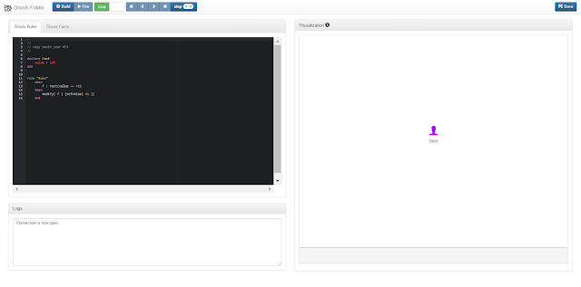

Introducing Drools Fiddle
Drools Fiddle is the fiddle for Drools. Like many other fiddle tools, Drools Fiddle allows both technical and business users to play around with Drools and aims at making Drools accessible to everyone.

The entry point to Drools Fiddle is the DRL editor (top left panel), which allows to define and implement both fact models and business rules, using the Drools Rule Language. Once the rules are defined, they can be compiled into a KieBase by clicking on the Build button.
If the KieBase is successfully built, the visualization panel on the right will visualize the fact types as well as the rules as graph nodes. For instance, this DRL will be displayed as follows:
declare MyFactType
value : int
end
rule “MyRule”
when
f : MyFactType(value == 42)
then
modify( f ) {setValue( 41 )}
end
All the actions that are performed on the working memory will be represented by arrows in this graph. The purpose of the User icon is to identify all the actions performed directly by the user.
For example, let’s see how we can dynamically insert fact instances into the working memory. After the KieBase compilation, the Drools Facts tab is displayed on the left:
This form allows you to create instances of the fact types that have been previously declared in the DRL. For each instances inserted in the working memory a blue node will be displayed in the Visualization tab. The arrow coming from the User icon shows that this action was performed manually by the user.
Once your working memory is ready, you can trigger the fireAllRules method by clicking on the Fire button. As a result, all the events occurring in the engine: rule matching, fact insertion/update/deletion are displayed in the visualization tab.
In the above example, we can see that the fact inserted by the user in step 1 triggered the rule “MyRule” which in turn modified the value of the fact from 42 to 41.
Some additional features have been implemented in order to enhance the user experience:
- Step by step debugging of the engine events.
- Persistence: the Save button associates a unique URI to a DRL snippet in order to share it with the community, e.g.: http://droolsfiddle.tk/#/VYxQ4rW6
- Multi tabbed DRL editor
- Decision table support
- Sequence diagram representation of rule engine events
- Fact history visualization
- Improvement of log events visualization
- KieSession persistence to resume stateful sessions
- Integration within Drools Workbench

{kind=link}
{kind=link}
{kind=link}
{kind=link}